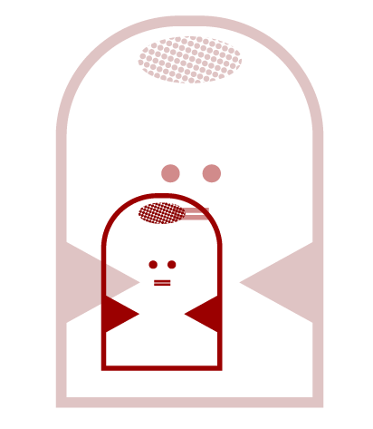
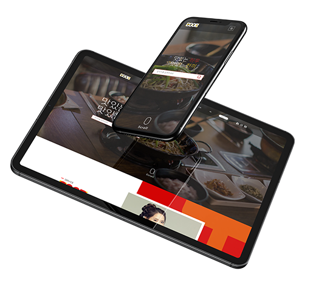
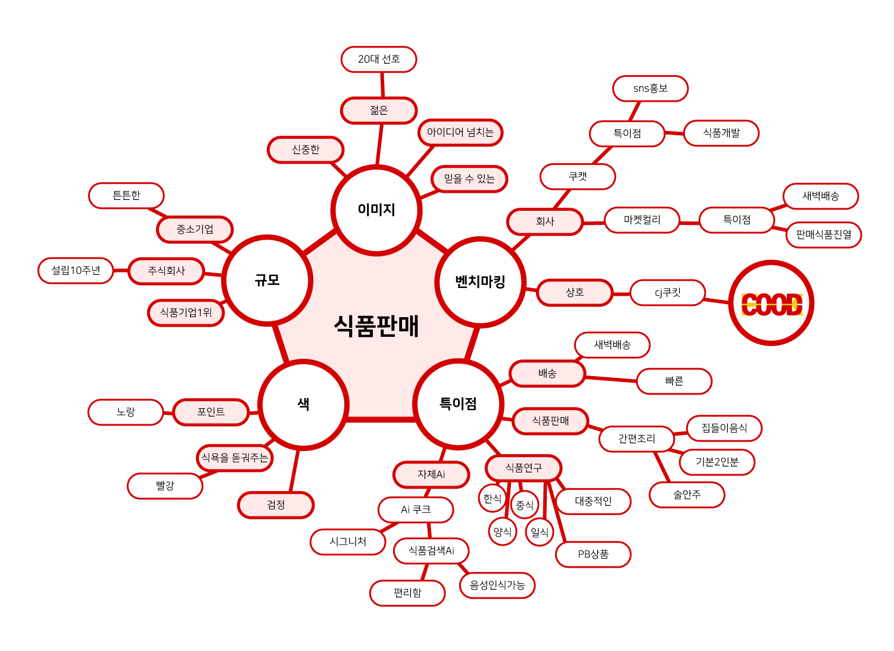
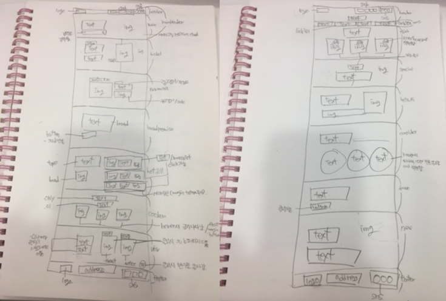
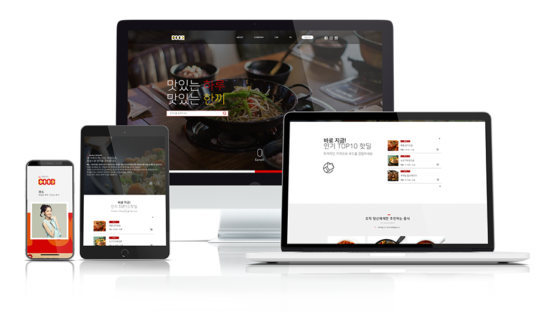
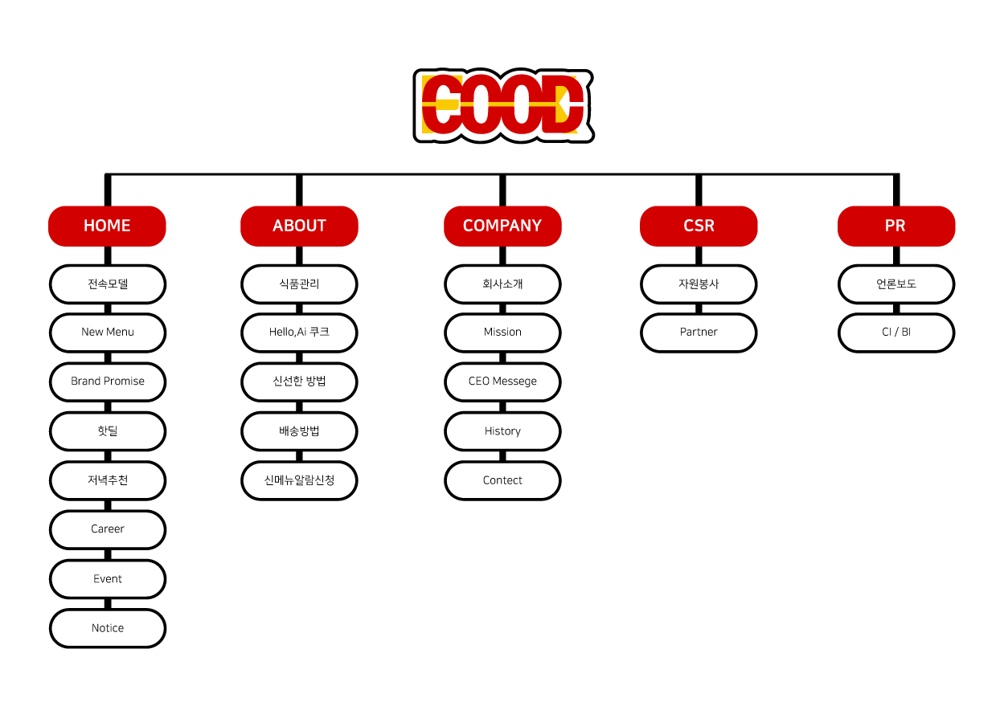

COOD
기획의도
저녁마다 무엇을 먹을까 고민하던게 귀찮아 한끼를 대충 때우던 날에 생각했습니다.
나처럼 밥을 매일 고민하는 사람들은 건강한 밥을 누군가 배달해주면 정말 좋지않을까?
가격도 합리적이라면 정말 이사업은 성공할 수 도 있겠다 싶어 만든 홈페이지입니다.
한끼가 하루가 되고 하루가 쌓여 매일이 되는 것에 보탬이 되는 한끼
맛있는 하루, 맛있는 한끼 쿠드를 만든 이유입니다.


COOD
저녁마다 무엇을 먹을까 고민하던게 귀찮아 한끼를 대충 때우던 날에 생각했습니다.
나처럼 밥을 매일 고민하는 사람들은 건강한 밥을 누군가 배달해주면 정말 좋지않을까?
가격도 합리적이라면 정말 이사업은 성공할 수 도 있겠다 싶어 만든 홈페이지입니다.
한끼가 하루가 되고 하루가 쌓여 매일이 되는 것에 보탬이 되는 한끼
맛있는 하루, 맛있는 한끼 쿠드를 만든 이유입니다.

쿠드는 'FOOD'와 'COOK'을 합쳐 만든 로고로
음식을 요리하다 라는 1차원적인 의미를 담고
있습니다. 음식을 요리하는 것, 그리고 그것을
소비자에게 주는 그 행위에 집중하여
건강한 음식을 맛있게 만드는 것을 기본으로
쿠드는 만들어졌습니다.
쿠드의 색깔은 빨간색을 중심으로 노란색이 받쳐줍니다.
빨강은 아이디어가 넘치는 회사, 밝은 에너지로 활력있는 회사
를 뜻합니다. 그리고 노란색은 머스타드를 생각나게 하는 색깔로
맛있는 음식, 생기있는 음식을 만들겠다는 쿠드의 다짐이
곁들어져 있습니다.

쿠크는 쿠드의 독자적인 기술로 제작한 Ai이자 쿠드의 시그니처입니다.
하는 일은 고객분들의 문의와 검색을 담당하여 알려드리고 있습니다.
쿠드에 궁금한 모든 것은 쿠크에게 이렇게 물어보세요
"쿠크, 오늘 뭐 먹지?"
쿠크가 세심하게 알려줄거에요.
핫딜이란, 고객감사 할인 행사로
쿠드는 고객님께 가격적으로 부담을 낮춰드리기 위해
파격적인 핫딜을 매주 화요일에 하고 있습니다.
인기 메뉴와 새로운 메뉴 다양하고 맛있는 음식을
가장 저렴한 가격에 살수 있는 기회를 제공하여
많은 고객님께서 쿠드의 정성스런 음식을 맛보실 때까지
핫딜은 계속됩니다.

식품판매를 기준으로 이미지, 규모, 벤치마킹, 색, 특이점을
생각했습니다.

빨간색과 노란색,검정색을 대표색으로 설정하였습니다.
전체적 폰트는 나눔스퀘어체를 사용하여 가독성을 높였고
로고폰트는 티몬고딕체를 사용하여
귀엽고 친근한 이미지를 표현하였습니다.

틀을 정리할 때 중요한 순서대로 정리하기 위해 노력하였습니다.
하나의 섹션의 클래스 이름은 의미있는 이름으로 작성하였고
hover나 클릭시 구현되는 것을 세세하게 적었습니다.

1920px와 1024px, 414px페이지를 제작했으며
1920사이즈는 스크롤 다운 시 다른 페이지가
전체적으로 꽉 차 보이게 담았습니다.
1024사이즈와 414사이즈는 글씨 사이즈를 줄이고
글자가 많으면 삭제하였고
이미지를 세로로 늘려 사용자가 한 섹션에
집중할 수 있게 디자인 하였습니다.

쿠드의 카테고리는 계층구조로 이루어져있습니다.
한 페이지당 주르륵 볼 수 있는 것이 특징이며,
식품회사인 만큼 음식같은 느낌을 내기위해
"떡꼬치"의 모습을 형상화 하였습니다.